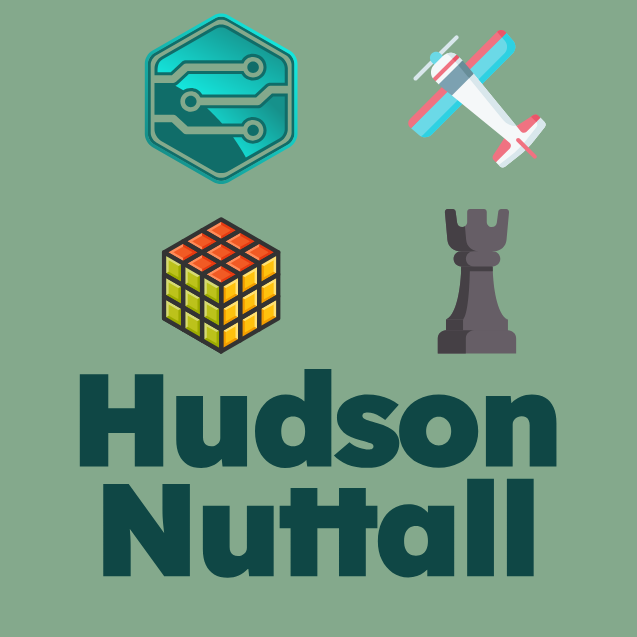
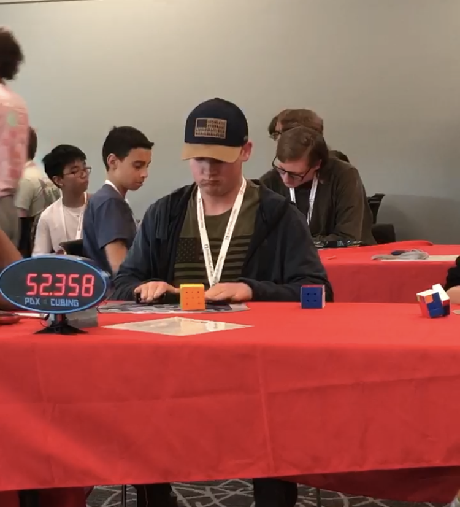

Home
Cyber Security
Hobbies

Hobbies
I have a lot of hobbies but I will show you a few
Flying
In January 2024 I started flight training, and I have loved every minute of it. I have flown over 45 hours, and I will be soloing very soon. I love flying cross country flights and showing people the joy of aviation.
Cubing
I have been cubing for a long time, and I like competing in competitions for it, my cubing journey started when I was messing with my brothers rubiks cube and I didn't like that I couldn't solve it, so I watched a youtube video, and the rest wasn't history, because I am still alive.I worked on getting faster and my time got down to about two minutes, after getting my own cube and practicing a lot and practicing more and upgrading my cube two more times I have eventually arrived at a 13.22 second record average of 5 time and a 10.82 single second record time. It didn’t stop there, since then I have learned to solve over 12 different types of cubes. I have competed in two competitions and in the second one I placed 9th in the 4x4 finals.
Chess
I started playing chess about six months ago, I was at a church camp when a friend challenged me to a chess game, and I said yes. What followed was him kicking my but, which I didn't like. So when I got home I donwloaded the chess.com app and started playing. I'm still not very good but I am improving everyday.
Piano
I have been playing the piano for over 12 years starting when I was 6 years old. I love playing and I have played many songs over the years, but some of my favorites are the Maple Leaf Rag by Scott Joplin, Pirates of the Caribbean arranged by Jarod Radnich, into the unknown by the Blasting Company, the Ghost Pepper rag by Pjotr Kolster and Mate Pribelszky, and Piano Fantasy by William Joseph. I trained at the Hoffman academy for a couple of years and that really helped my skills increase from intermediate to early advanced.